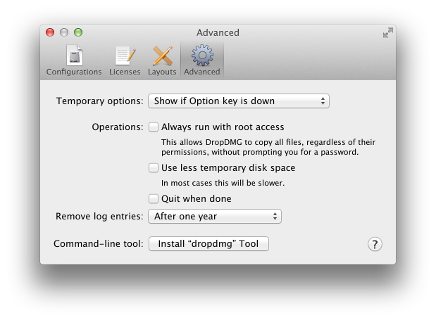

Previous
Next
Up
Table of Contents
DropDMG 3.2.9 Manual
Technical Support
5.4 Advanced

5.4.1 Temporary options
5.4.2 Always run with root access
5.4.3 Use less temporary disk space
5.4.4 Quit when done
5.4.5 Remove log entries
5.4.6 Command-line tool
Previous
Next
Up
Table of Contents
DropDMG 3.2.9 Manual
Technical Support